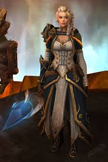

The fallen prince who became the Lich King. His story is one of the most tragic and powerful arcs in Warcraft history.
Former Warchief of the Horde and a key figure in uniting orc clans. Thrall represents honor, leadership, and redemption.
The Banshee Queen whose choices shaped entire expansions. Loved and hated, Sylvanas remains one of the most complex characters.
A powerful sorceress and leader of Kul Tiras. Jaina’s journey from peacekeeper to battle‑hardened commander is unforgettable.
The self‑proclaimed “betrayer” who ultimately became a protector of Azeroth. Illidan’s story is filled with sacrifice and destiny.